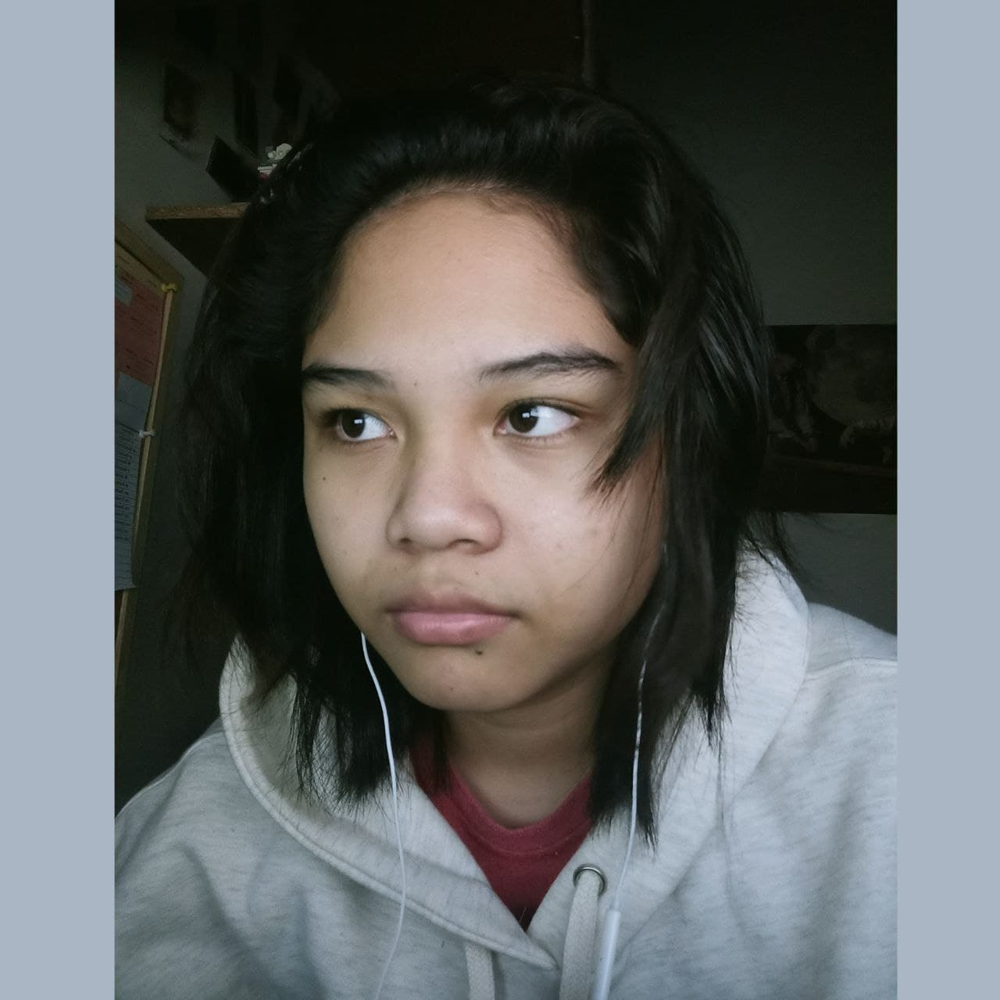

My name is Zhanelle Kattrice B. Oriola, from the city of Taguig. An 18-year old freshmen at Adamson University. The career path I chose is
Bachelor of Science in Information Technology. But, if I'm not an IT student, I would be studying music
or astronomy, just between the three. Why did I end up choosing BSIT? Well, I wanted more to be a
game developer rather than an astronomer or a musician. But, that doesn't mean that stopped me from
learning more about it.